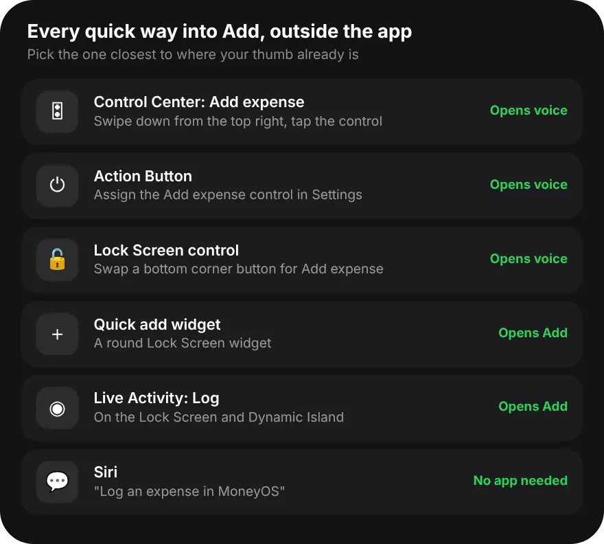

Why add expenses from Control Center?
Because Control Center is one swipe away from any screen, so logging a spend takes the same effort as turning on the torch.
Most missed expenses are small: a coffee, an auto ride, a quick top-up. Each one takes a few seconds to log, but only if you do it right away. Wait until the evening and half of them are gone. A control you can reach from the Lock Screen or from inside another app removes the searching and tapping, so the habit has nothing to trip over.
How do I add MoneyOS to Control Center?
Open Control Center, tap Add a Control, find MoneyOS and tap Add expense. Five steps:
- Open Control Center. Swipe down from the top right corner of the screen.
- Start editing. Touch and hold an empty space, or tap the plus button at the top left, then tap Add a Control.
- Find MoneyOS. Search for MoneyOS, or scroll to it, and tap Add expense.
- Place it. Drag the control where your thumb reaches easily, then tap an empty space to finish.
- Tap it when you pay. MoneyOS opens on Speak your expenses and starts listening. Say the amount and what it was for, then check and save.
The control is called Add expense and shows a microphone. It needs iOS 18 or later. On older versions of iOS, use the Quick add widget or Siri instead, both covered below.
What happens when I tap Add expense?
MoneyOS opens on the Add screen with Speak your expenses already listening. Say your spend, then check it and save.
Say the amount and what it was for, such as "180 coffee", or several at once, such as "200 chai and 1200 petrol". One spend fills the form. Several open in a review list where you check each row before saving, so nothing is saved by mistake. If you would rather type, tap Cancel on the voice sheet and you are on the normal Add screen. The first time, iOS asks for Microphone and Speech Recognition access. Here is more on logging several expenses by voice.
Can I put it on the Action Button or the Lock Screen?
Yes. On iOS 18 the same Add expense control can go on the Action Button or on the Lock Screen.
On an iPhone with an Action Button, open Settings, then Action Button, swipe to Controls and choose MoneyOS Add expense. A press then opens MoneyOS ready to listen, from any screen. On the Lock Screen, touch and hold it, tap Customize, choose the Lock Screen, then remove one of the two buttons at the bottom and add Add expense in its place. You can then log a spend without unlocking first, although MoneyOS opens after Face ID or your passcode.
What are the other quick ways to add an expense?
A Lock Screen widget, the Live Activity and Siri. Pick the one closest to where your thumb already is.

The Quick add widget is a round Lock Screen widget that opens the Add sheet. The spending Live Activity has a Log button that does the same, on the Lock Screen and in the Dynamic Island. Read more on MoneyOS widgets and the Live Activity. And Siri can save a spend without opening the app at all: say "Log an expense in MoneyOS". Here is how to log an expense with Siri.
Frequently asked questions
Can I add an expense from Control Center on iPhone?
Yes, on iOS 18 or later. Add the MoneyOS Add expense control to Control Center, then tap it to open MoneyOS ready to take a spend by voice.
What does the Add expense control do?
It opens MoneyOS on the Add screen with the Speak your expenses sheet already listening. Say one or several spends, then review and save them.
Can I type instead of speaking?
Yes. Tap Cancel on the Speak your expenses sheet and you are on the Add screen, where you can type the amount and details as usual.
Can I put the control on the Action Button or Lock Screen?
Yes. On iOS 18, the same control can go on the Action Button of iPhones that have one, or replace one of the two buttons at the bottom of the Lock Screen.
Is my voice sent to MoneyOS?
No. The control only opens MoneyOS, and your entries are saved on your iPhone. Speech is turned into text on the iPhone where it supports that, and otherwise by Apple's own speech recognition. MoneyOS has no servers.
Is MoneyOS free?
Yes. The whole app is free, with no subscription, no ads and no in-app purchases.